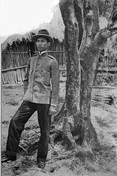
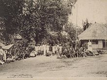
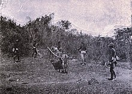

Cry of Nueva Ecija
The "Cry of Nueva Ecija" is the 1896 revolutionary battle led by General Mariano Llanera, manned and assisted by General Manuel Tinio and Pantaleon Valmonte of Gapan City, Nueva Ecija and Colonel Alipio Tecson of Cabiao, Nueva Ecija who later on became Brigadaire General. The battle was fought in Cabiao, Nueva Ecija. Alipio Tecson would eventually become Governadorcillo of Cabiao, Nueva Ecija.
Tobacco Monopoly
Maintaining the Philippines as a colony became a challenge for the Spanish Empire. Expenses incurred in running the colony were usually paid for by a yearly subsidy (called real situado) sent from the Philippines' sistercolony in Mexico. This financial support from the Spanish royal court was often insufficient, especially with expenditures in the Philippine colony growing each year.
Novo Ecijanos suffered a lot from the system. Nueva Ecija was more often able to meet production quotas compared to the other districts. Despite this, tobacco policy imposed a lower price on tobacco from areas closer to Manila. That meant that first-class tobacco leaf grown and harvested from Nueva Ecija was priced lower by one dollar, compared to those from Ilocos, La Union and Cagayan Valley.
The tobacco monopoly did not spur Novo Ecijanos to revolt, unlike the Ilocanos who staged an uprising over injustices in the system. Some tobacco growers in Nueva Ecija resorted to smuggling their own harvests in order to get some profit. But getting caught entailed harsher fines and penalties. Even sympathetic local officials had no choice but to enforce the unjust policies under pain of arrest and hard labor, once laxity on their part resulted in low production. The flourishing tobacco industry coupled with the rich agricultural lands in central and northeastern Nueva Ecija also attracted migrants from neighboring Pampanga, Pangasinan, Ilocos and Tagalog areas. This made Nueva Ecija a melting pot of cultures and influences, the results of which are still evident in present-day Novo Ecijano culture. As the tobacco monopoly fuelled further unrest, Spain finally abolished the monopoly on December 3, 1882. It was only then that they could all once again grow rice for food.
Rebellion against Spain
One distinct feature of the 1896 revolution against Spain in Nueva Ecija was that it was led by the elite, ruling class instead of the masses. Leaders of the revolt in Nueva Ecija were municipal officials and prominent citizens, who refused to collaborate with the Spanish authorities when armed struggle broke out. Despite being in the ruling class and enjoying positions in the colonial government, these prominent Novo Ecijanos proved their patriotism and love for fellow Filipinos.[19] In fact, one of the founding members of the reform movement La Liga Filipina[20] was lawyer and Novo Ecijano Mamerto Natividad. By the time the Katipunan, the revolutionary movement against Spain, was formed, Novo Ecijanos were actively yet secretly joining it. Even local officials in Nueva Ecija secretly allied with the illustrados and farmers in forming the underground revolutionary society.
American Period
History records how the Philippine–American War began after American troops killed a Filipino soldier who was crossing the San Juan bridge on February 4, 1899.[32] One could also say however that hostilities and mistrust really began as early as August 13 the previous year. On that day, the Spanish colonial government in Intramuros surrendered to American forces instead of the Filipino soldiers that surrounded the Walled City. Thus began the United States own effort to have her own colonies, with the Philippines served, as it were, on a silver platter by the dying Spanish Empire thanks to the Treaty of Paris.
When the war between Filipinos and Americans finally began, the fate of the infant Republic of the Philippines again lay in the hands of General Aguinaldo and his most trusted men who included Novo Ecijanos like General Llanera and General Tinio. And, as guerilla warfare became an effective tactic for the Filipinos, Novo Ecijanos were among the most feared guerillas around. Both the Novo Ecijanos and Americans were willing to resort to brutal tactics, torture and even atrocious killings in the course of the war. Two nove ecijanos were deported and exiled in Guam for not taking allegiance to the American government, they were General Mariano Llanera and Col. Alipio Tecson.
World War II

During World War II the Imperial Japanese Army entered the province and Nueva Ecija was taken in 1942. On March 29, 1942, under the leadership of Luis Taruc the Hukbalahap (Hukbo ng Bayan Laban sa Hapon-People's Army Against the Japanese) was organized in Sitio Bawit, Barrio San Julian in the town of Cabiao. It was perceived to be the military arm of the Partido Komunista ng Pilipinas (Communist Party of the Philippines), that brought about the beginning of the early organized resistance of the Filipino people.
In January to August 1945, combined American and Filipino soldiers liberated Nueva Ecija with the recognized guerrillas continuing to harass the Japanese at every opportunity. When Filipino soldiers of the 2nd, 22nd, 23rd, 25th and 26th Infantry Division of the Philippine Commonwealth Army and the 2nd Constabulary Regiment of the Philippine Constabulary was re-invading launches to entering liberated the province of Nueva Ecija and helping recognized guerrilla resistance fighter units, the Hukbalahap Communist guerrillas and the American troops against the Japanese Imperial forces during the Invasion of Nueva Ecija.
Flora and Fauna

The species of flora and fauna in the province is diverse on its north and east borders, which exhibit a shared ecosystem with the Caraballo mountains in the north and the Sierra Madre mountains in the east. The southeast areas are also known for its diverse fauna and flora due to the presence of the Minalungao National Park. The ceratocentron fesselii orchid, which can only be found in the Pantabangan–Carranglan Watershed Forest Reserve in Carranglan, is considered one of the most critically endangered orchid species in the entire Southeast Asian region. It is endangered due to illegal gathering from the wild and due to the illegal black market trade. The forest reserve is also home to the endemic Rafflesia consueloae, which is the smallest rafflesia in the world and is found nowhere else. Philippine deer, Philippine warty pig, cloud rats, and other indigenous mouse species are also present in the province. In a recent activity, the presence of a Philippine Eagle couple was discovered in the Sierra Madre side of Nueva Ecija. The couple are now protected by the local government units in that area. Snakes, lizards, and various amphibian species are also present, especially in wetter months.